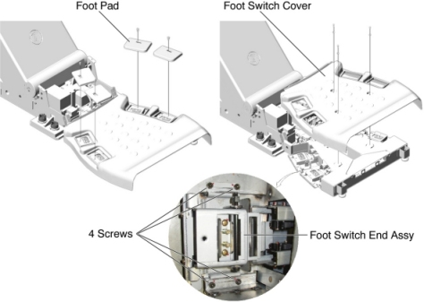

Operating Documentation
Direction 5196839-800, Rev# 6
RT16 and Xtra Service Info Adv
Operating Documentation |
| Required Persons | Preliminary Reqs | Procedure | Finalization |
|---|---|---|---|
| 1 |
| Last Revised: | 30 November 2006 |
| Item | Qty | Effectivity | Part# | Manufacturer | |
|---|---|---|---|---|---|
| Foot Switch End Assy (5121380) | 1 | - | - | - | |
Raise the Table to maximum height.
Move the Cradle and IMS to OUT limit position.
Remove power from Table by turning off 120VAC, Axial Drive and HVDC switches on Service Switch Panel.
Remove 4 foot pads from the foot switch assembly.
Remove a foot switch cover by unscrewing 3 screws.
Unscrew 4 screws holding the Foot Switch End Assy, and disconnect the cable connector, then remove the Foot Switch End Assy from the foot switch assembly.
Illustration 1: Foot Switch End Assy Removal

Power up the Table from the Service Switch Panel.
Verify that the foot switch function is operating normally.
Turn off all 3 switches (Axial Drive, HVDC, 120VAC), and re-install the foot switch cover and the 4 foot pads.